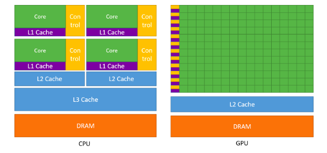
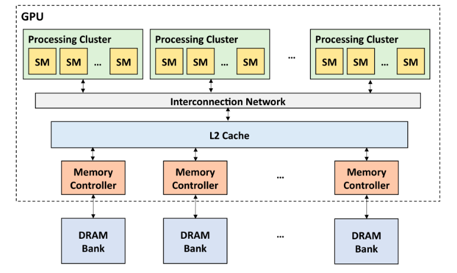
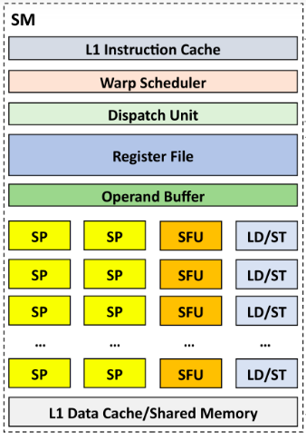
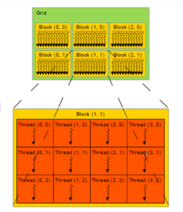
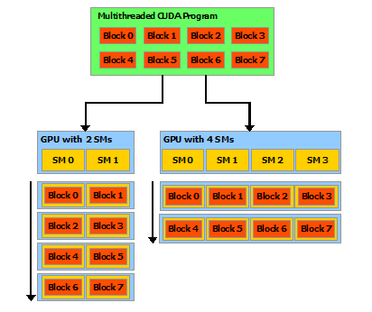
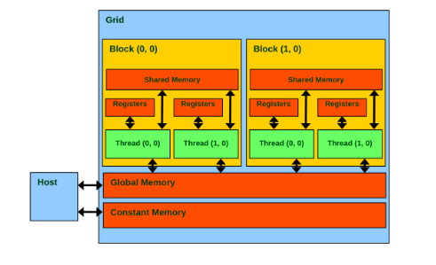

更新：
本文章部分内容（如硬件参数）已过时或有错误，请批判式阅读。
参考：
《CUDA 编程：基础与实践》
《GPGPU 异构高性能计算》
GPU 介绍
- 一个典型的 GPU 参数，以 NVIDIA H100 GPU 为例：
- 16896 FP32 CUDA cores；
- 66.9 TFLOPS (FP64 Tensor core)；
- 33.5 TFLOPS (FP64)；
- 3352 GB/s memory bandwidth；
- 700W TDP；
- TSMC’s 4N customized for NVIDIA；
GPU vs CPU：

GPU 微体系结构层次（硬件层面）：
- 其中 SM 为 Streaming MultiProcessor，SP 为 Streaming Processor；一个 GPU 通常有数百个 SM，每个 SM 有数百个 SP；


- GPU 程序层次（软件层面）：
- 一个程序 kernel 由多个 block 组成，一个 block 由多个 thread 组成；
- 数个 block 分配（映射）到一个 SM 中（block 与 SM 同等大小，某一时刻 SM 中仅存放一个 block）；
- 数个 thread 与一个 SP 对应（某一时刻 SP 中仅负责一个 thread），目前一个 block 中最多包含 1024 个 thread；
- 同一个 block 中编号相邻的 32 个 thread 组成一个 warp，被调度器集体调度，通常对程序员透明；


CUDA 入门
- CUDA = Compute Unified Device Architecture，统一计算设备架构，由 NVIDIA 提出的通用并行计算平台和编程模型；Use parallelization to hide the latency；
- 直接使用
nvcc代替g++即可编译（需要后缀名为 .cu），Host Code 将调用 Host C Compiler/Linker，Device Code 调用 Device Just-In-Time Compiler； - 区分：SPMD 编程模型（CUDA、MPI、OpenMP），SIMD 编程模型（Intel MMX、SSE、AVX）；
- SPMD 是 GPU 的编程模型，SIMT 是 GPU 的执行方式，SIMD 是 GPU 计算单元的处理方式；
- 一个并行函数是一个 kernel，使用
<<<gridDim, blockDim>>>指定 thread 数目与排布； - host 代表本机，device 代表并行计算设备（GPU）：
- host 调用 device 执行，函数加上前缀
__global__（必须返回void）； - host 调用 host 执行，函数加上前缀
__host__； - device 调用 device 执行，函数加上前缀
__device__，可以与__host__同时使用，但不能与__global__同时使用；
- host 调用 device 执行，函数加上前缀
- 内存布局：
- 每个 thread 有自己的寄存器和 local memory；
- 同一个 block 中的 thread 可以通过 shared memory 共享数据，速度类似 L1 Cache；
- 所有 thread 可以通过 global memory 共享数据；
- 另外还有只读的 texture memory 和 constant memory；
- 同一个 block 中 thread 可以通过
__syncthreads()进行路障（Barrier）同步；

- 内存操作：
- 使用
cudaMalloc((void**)&addr, n * sizeof(float))在 device 的 global memory 中分配空间，其中 addr 为float*； - 使用
cudaFree(addr)释放空间； - 使用
cudaMemcpy(h_addr, d_addr, size, cudaMemcpyDeviceToHost)实现 device 与 host 之间的内存拷贝；参数可选cudaMemcpyHostToHost、cudaMemcpyHostToDevice、cudaMemcpyDeviceToHost、cudaMemcpyDeviceToDevice、cudaMemcpyDefault，不符合实际情况将导致错误； - 可以使用
cudaMemcpyToSymbol()和cudaMemcpyToSymbol()在设备与设备静态内存区（定义在核函数之外，使用__device__前缀）之间交换数据，而不使用参数传递； - 均返回一个
cudaError_t，成功时值为cudaSuccess；
- 使用
- 核函数中可以使用的变量：
gridDim.x、blockDim.x、blockIdx.x、threadIdx.x；可以使用dim3 grid_size(3, 3)或dim3 grid_size(1, 2, 3)定义成二维或三维，此时可以使用相应 y 或 z； - 变量声明默认在 register 中，放不下则在 local memory
中，生命周期与访问性均为 thread；加上
__shared__、__device__、__constant__分别分配到 shared memory（生命周期和访问性为 block）、global memory、constant memory 上；
CUDA 进阶
- Memory Coalescing：一次性将同一时刻一个 warp 要访问的内存全部取出；因为这个技术，CPU 的 SIMD 往往一个线程处理的数据是相邻的，而 GPU 中往往不相邻，GPU 中相邻线程处理相邻数据；
- 一个共享内存被分为 32 个 bank，与内建变量 warpSize 值相等；同一线程束内多个线程不同时访问同一个 bank 中不同层的数据，则只需要一次内存事务（memory transaction）；
- 原子操作：
AtomicAdd(&a, b)； - CUDA 在 host 使用固定内存（调用特殊系统 API，保证不会换出，
cudaMemcpy()速度快一倍，不可过度使用），可以使用cudaHostAlloc(&data, size, cudaHostAllocDefault)或cudaMallocHost(&data, size)和cudaFreeHost(data)操作，与cudaMemcpyAsync()配合，才能达到异步数据传输效果； - 默认流中 host 与 device 的运算是并行的（因此需要核函数结果时应执行
cudaDeviceSynchronize()；使用非默认流实现多个核函数并行，以及核函数与数据传递的并行（良好设计下，流越多，并行度越高，直到达到硬件资源上限）：
1 | cudaStream_t stream0, stream1; |
- 进行非合并只读读取（即不连续只读读取）global memory
时，会自动使用
__ldg()进行优化； - 统一内存编程：CPU 与 GPU 均可访问，使用
cudaMallocManaged(&data, size, flags = cudaMemAttachGlobal)分配，cudaFree()释放；静态统一内存：在核函数外定义，加上前缀__device__ __managed__； - 统一内存数据预取 API：
cudaMemPrefetchAsync(data, N * sizeof(int), myGpuId, stream)； - 统一内存建议 API：
1 | cudaMemAdvise(data, N * sizeof(int), cudamemadvisesetreadmost, cudaCpuDeviceId); |
- 若分支能写成
c = flag ? a : b或if (condition) {...}的形式，则并行性良好，否则then与else的线程之间为串行执行；
CUDA 并行计算模式
- Tile 模式：每次从 global memory 中加载一段到 shared memory，使用 barrier synchronization 进行线程开始与结束同步，再进入下一个 Tile；以矩阵乘法为例，每个 block 负责结果矩阵中的一个子矩阵，每次将计算这个子矩阵需要的部分数据（两个乘数矩阵分别取一块）载入并计算（每个 thread 负责结果子矩阵的一格），下一个 Tile 再取下一批计算此结果子矩阵的部分数据，最后再累加得到最终此结果子矩阵；具体编码较为繁琐；
- Convolution 卷积模式：正常计算，注意处理边界即可；可以使用 Tile；
- Histogram 直方图模式：
for i bin[arr[i]]++;问题，加速技巧：- block_size 设为与 SM 内线程数相等，注意 coalescing；
- shared memory 中做 Atomic 操作速度很快，但 global memory 中很慢；
- 胖内核、contiguous unrolling：循环展开；
- Reduction 规约模式：类 Map Reduce，使用规约树以 log(n) 步执行
Max、Min、Sum、Product 等满足交换结合律的运算；每次循环开始均需要
__syncthreads()； - Scan 前缀和模式：每次迭代
stride *= 2; a[i] += a[i - stride];，需要__syncthreads()；更优秀的做法：使用树状数组；
其它
gridDim要足够，通常上取整，因此可能出现最后超出范围的情况，需要判断；- 尽量使用 shared memory，最后返回结果时再使用 global memory；
- 注意栅栏同步函数
__syncthreads()仅能进行同一 block 中 threads 的同步； - 一些常用 CUDA 库（应尽量使用）：
- Thrust：类似 C++ STL；
- cuBLAS：线性代数；
- cuFFT：快速傅里叶变换；
- cuSPARSE：稀疏矩阵；
- cuRAND：随机数生成器；
- cuSolver：稠密矩阵与稀疏矩阵；
- cuDNN：深度神经网络；
- 使用 cuda-gdb 调试，nvprof（nsight compute） 测速，nsight system 分析硬件资源占用情况；